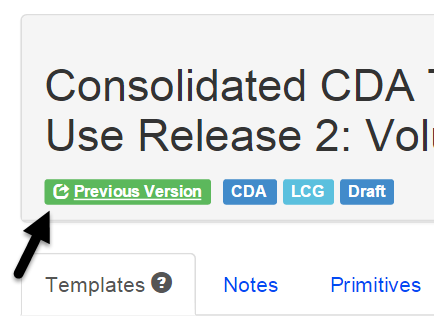

Version 2.16.0
Released on Thursday, Oct 23, 2014
Retired Template Status
Trifolia now supports a “Retired” template status, representing a template that should no longer be used. The Retired status is only used on templates that have been versioned. The Retired status omits the template from the main body of the MS Word document and includes an additional appendix table listing all retired templates and their descriptions. Upon retirement, a template's description should be modified to describe why the template was retired.
After selecting the “Retired” status, you will be reminded that the “implied template” reference and all constraints in the template will be automatically removed. This ensures that template references do not linger in the retired template, inadvertently causing additional templates to be included in the exports.
View Template and Implementation Guide
The “View Template” and “View Implementation Guide” screens have been improved for consistency and visibility of clickable links.

Export Schematron Inferred Templates Option
The option to exclude inferred templates from a Schematron export has been reintroduced. Implementation guides that repeat constraints from implied templates in the implying template need this ability so that validation messages aren’t duplicated.
Development Log
New Feature |
Export Schematron: Bring back "Include inferred templates" check box |
New Feature |
Add "Retired" status to templates |
New Feature |
Appendix in MS Word exports for retired templates |
Improvement |
Links in labels on View Template and View Implementation Guide should be obvious |
Defect |
Single Value bindings being changed to other when you save and re-open |
Defect |
Add "Source URL" validation to "Value Set" dialog |